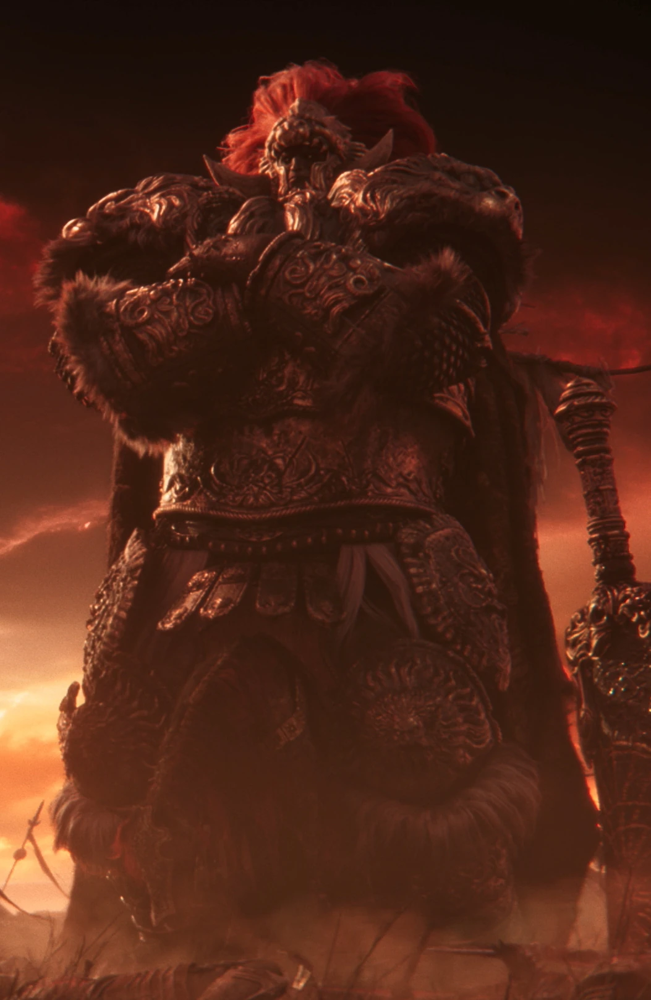
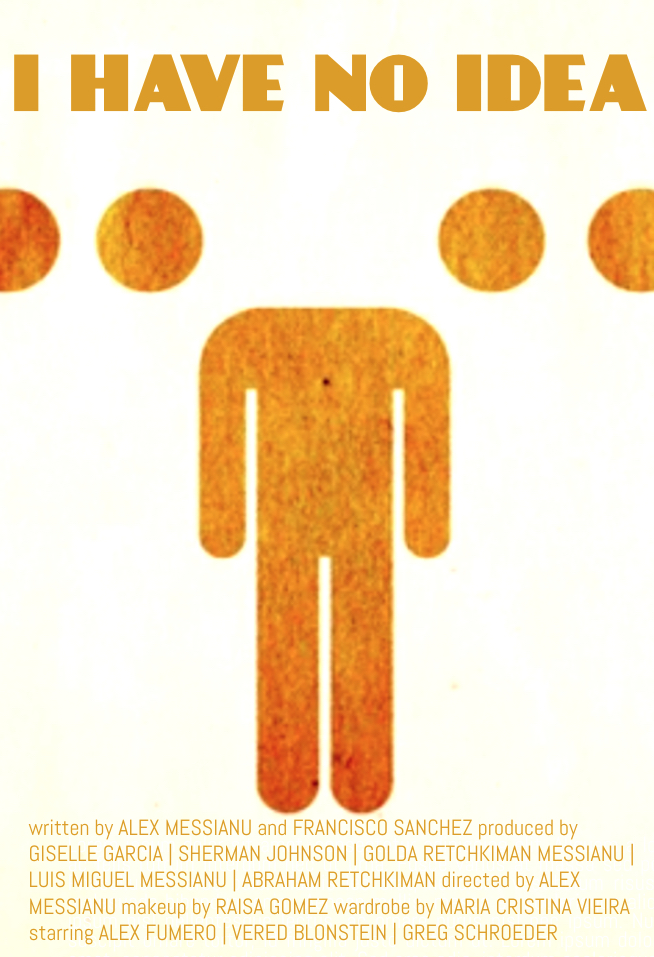
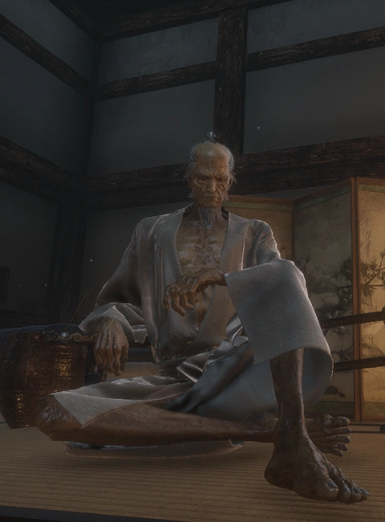

ARTICLES
Why Radahn is awesome
Ruben Becks
Starscourge Radahn is an absolute beast and easily one of the most epic demigods of all time. Not only is he a hulking demigod riding a hilariously tiny horse, but he’s also a master of gravitational magic, using it to both enhance his strength and keep his steed from collapsing under his massive weight. His lore is tragic and noble—once a proud general and warrior who loved battle, he ended up losing his mind to scarlet rot, yet still roams the desert in a kind of endless war. The Radahn Festival, where Tarnished from all over come together to take him down in a gladiator-style free-for-all, is one of the most unforgettable moments in the game. He’s a symbol of power, madness, and glory—an awesome dude in every sense of the word.
Tags:
Category: Awesome people
24 april 2025

Why I have no idea
Ruben Becks
Honestly, I have no idea what’s going on, and that’s kind of the whole vibe right now. It’s like I’m just winging it, hoping something clicks, but everything feels like it’s moving faster than I can keep up. I’m out here second-guessing every decision, staring at the screen like it’s gonna magically explain itself. Whether it’s figuring out what I’m supposed to do, say, or even feel—yeah, no clue. But hey, sometimes not knowing is part of the process, right? Chaos with a sprinkle of potential.
Tags:
Category: None
24 april 2025

Why I have an idea
Ruben Becks
Wait—hold up—I do have an idea now. It’s like the fog cleared just enough for something to click, and suddenly things don’t seem so scrambled anymore. It might’ve come outta nowhere or built up slowly without me even noticing, but now it’s here, and it actually makes sense. It’s not perfect, maybe not even complete, but it’s something solid to start with. That shift from “I don’t know” to “wait, what if…” is underrated. Now there’s momentum, a spark—something to build on.
Tags:
Category: Idea
24 april 2025
Why Gwyn sucks
Ruben Becks
Gwyn, Lord of Cinder, is the poster child for delusional, decaying authority clinging to relevance. He wasn’t a hero—he was a coward in denial, too terrified to let go of his crumbling reign, so he torched himself on a glorified bonfire and called it salvation. He didn't preserve the world—he poisoned it, chaining everything to a dying flame out of pure ego. He sold out his allies, shattered his family, and left a world locked in stagnation and suffering just to keep his name etched in stone a little longer. And when you finally face him? He’s not some divine warrior—he’s a hollowed-out joke, weak, broken, and desperate. Gwyn wasn’t the savior of the Age of Fire. He was its parasite.
Tags:
Category: Critic
24 april 2025

Why Isshin Ashina is the greatest man ever
Ruben Becks
Isshin Ashina is the greatest man of all time because he embodies everything a legendary warrior should be—honor, skill, and sheer unshakable will. He built a nation with nothing but his blade and an iron sense of purpose, carving his name into history not through tyranny, but through unmatched strength and resolve. Even in death, when resurrected at his weakest moment, he fights like a force of nature—no tricks, no gimmicks, just raw, refined mastery. Isshin doesn’t hide behind mysticism or corruption; he faces his enemies head-on with dignity and fire in his soul. He’s not just a swordsman—he’s the storm, the standard, and the soul of true warrior spirit.
Tags:
Category: Japan Man
24 april 2025
